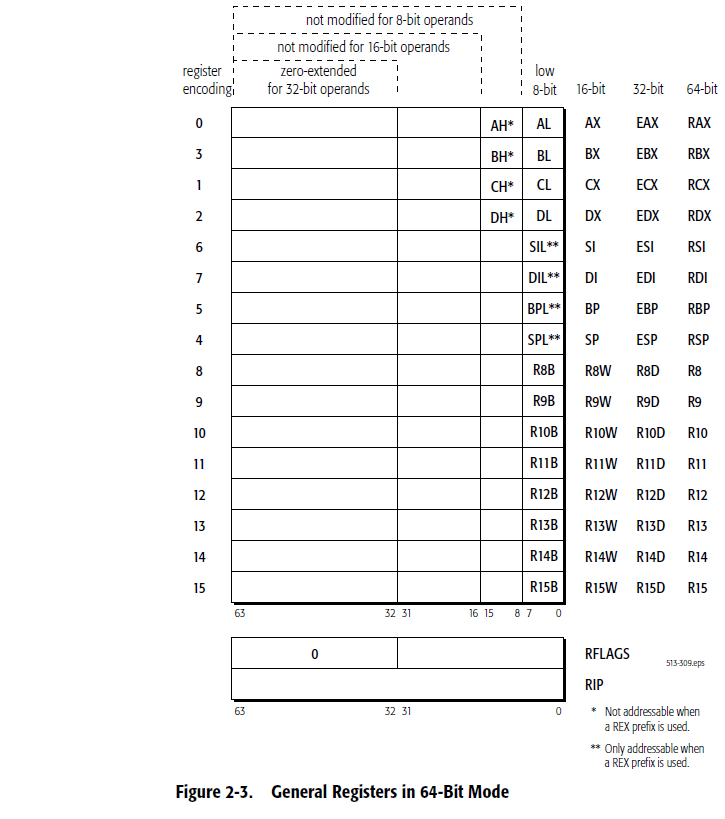
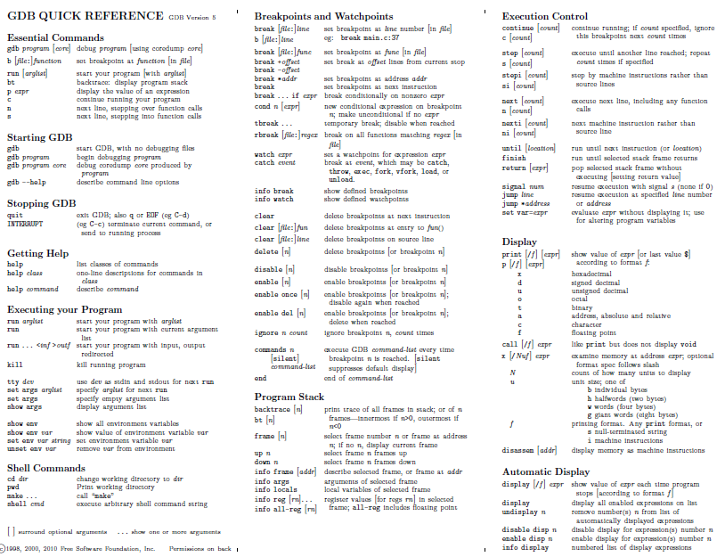
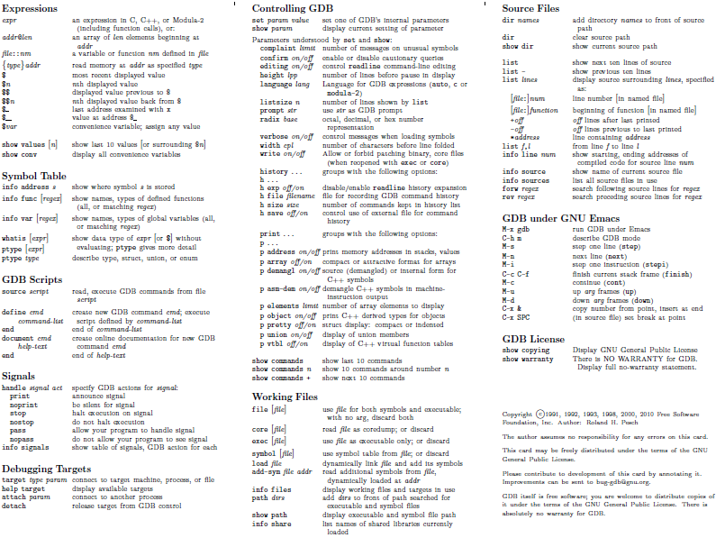

19. Programación Ensamblador AT&T x86
19.1. Programas x86-32
19.1.1. Programa Minimalista
Estructura del programa
-
Una Cabecera y dos Secciones:
-
Cabecera con comentarios.
-
Sección de Datos: Se realiza la reserva de para implementar las variables inicializadas
-
Directiva
.section .dataó únicamente.data
-
-
Sección de Instrucciones: Secuencia de instrucciones en lenguaje ensamblador
-
Directiva
.section .textó únicamente.text
-
-
Cabecera
-
Cabecera con comentarios sobre:
-
Nombre del programa, lenguaje de programación.
-
Descripción del programa: entradas al programa, salidas, función del programa.
-
Entorno de programación: sistema operativo, assembler utilizado, comandos de compilación, ensamblaje, linker.
-
Comentarios sobre el autor, fecha, etc
-
Sección de Datos
-
Directiva
.section .data: indica el comienzo de la sección de datos -
Etiqueta
n::reserva de memoria en la dirección simbólica n -
Directiva
.int:reserva de 4 bytes a partir de la dirección n: direcciones n,n+1,n+2,n+3 -
Literal
5:valor de inicialización de la reserva de memoria
Sección de Instrucciones : punto de entrada y bloque de salida: llamada del sistema y llamada al sistema
-
Directiva
.section .text: indica el inicio de la sección de instrucciones. -
Sintaxis de las instrucciones en lenguaje AT&T :
-
etiqueta: operación operando_fuente,operando_destino #comentario
-
-
Punto de entrada al programa desde el sistema operativo:
-
El SISTEMA Operativo llama al programa o aplicación.
-
Etiqueta _start: . Apunta a la primera instrucción del programa.
-
Directiva
.global: La etiqueta _start tiene que ser "visible" fuera del programa sum1toN para que el linker la enlace con el sistema operativo linux como punto de entrada, es decir, tiene que ser un símbolo global al resto de programas y no local al programa sum1toN. El linker ld por defecto presupone que el símbolo utilizado como etiqueta del punto de entrada es _start.
-
-
Punto de salida del programa al sistema operativo:
-
Es necesario acabar con el proceso del programa sum1toN y liberar todos los recursos que este utilizando dicho proceso. Esta tarea de fin de proceso la tiene que realizar el sistema operativo o kernel linux.
-
El programa o aplicación llama al El SISTEMA Operativo.
-
El programa sum1toN llama al sistema operativo para realizar la operación de fin de proceso mediante la ejecución de la función exit(argumento) . El sistema operativo tiene un listado de posibles funciones que ejecuta si es llamado. Una de dichas funciones es exit(argumento).
-
LLamada al Sistema Operativo en lenguaje ensamblador:
-
Registro EAX: almacena el código de la función a ejecutar por el Sistema Operativo. El código de la función exit es 1.
-
Registro EBX: almacena el código del argumento de la función exit(argumento). El valor 0 se interpreta como ejecución del programa correcta.
-
Instrucción
int $0x80: esta instrucción llama al sistema operativo, INTerrumpe al sistema operativo para que ejecute la función asociada al código almacenado en el registro EAX.
-
-
Fin del ensamblaje
-
Directiva
.end
19.1.2. Ejemplo Básico
-
Módulo fuente: sum1toN.s
### Programa: sum1toN.s ### Descripción: realiza la suma de la serie 1,2,3,...N ### Es el programa en lenguaje AT&T i386 equivalente a sum.ias de la máquina IAS de von Neumann ### gcc -m32 -g -nostartfiles -o sum1toN sum1toN.s ### Ensamblaje as --32 --gstabs sum1toN.s -o sum1toN.o ### linker -> ld -melf_i386 -o sum1toN sum1toN.o ## Declaración de variables .section .data n: .int 5 .global _start ## Comienzo del código .section .text _start: mov $0,%ecx # ECX implementa la variable suma mov n,%edx bucle: add %edx,%ecx sub $1,%edx jnz bucle mov %ecx, %ebx # el argumento de salida al S.O. a través de EBX según convenio ## salida mov $1, %eax # código de la llamada al sistema operativo: subrutina exit int $0x80 # llamada al sistema operativo .end -
Compilación:
gcc -nostartfiles -m32 -g -o sum1toN sum1toN.s -
Ensamblaje:
as --32 --gstabs sum1toN.s -o sum1toN.o -
linker:
ld -melf_i386 -o sum1toN sum1toN.o -
Directivas del traductor ensamblador: .section, .data, .text, .byte, .end, etc… empiezan con un punto como prefijo
|
|
|
|
|
|
-
Las etiquetas llevan el sufijo :
-
La etiqueta _start: es el punto de entrada al programa. Obligatoria. La utiliza el linker.
-
Sufijos de los mnemónicos
-
b → byte → 1Byte →Ej: movb
-
w → word → 2Bytes →Ej: movw . En este contexto word son 2 bytes por razones históricas.
-
l → long → 4Bytes →Ej: movl . Valor por defecto.
-
q → quad → 8Bytes →Ej: movq
-
-
Direccionamientos de los operandos:
-
En la misma instrucción los operandos fuente y destino no pueden hacer ambos referencia a la memoria Principal.
-
inmediato: prefijo del operando $
-
registro: prefijo del registro %
-
directo: el operando es una etiqueta que apunta a la memoria principal
-
indirecto: el operando es una etiqueta o un registro: utiliza paréntesis. (etiqueta) ó (%registro). Ver indexado.
-
La etiqueta referencia una posición de memoria que contiene a su vez una dirección de la memoria principal que apunta al operando.
-
El registro contiene la dirección de la memoria principal que apunta al operando.
-
-
indexado
-
dirección efectiva: base + index*scale + disp → la sintaxis es: disp(base,índice,escala)
-
foo(%ebp,%esi,4) → dirección efectiva= EBP + 4*ESI + foo
-
(%edi) → dirección efectiva= EDI → direccionamiento indirecto
-
-4(%ebp) → dirección efectiva= EBP - 4
-
foo(,%eax,4) → dirección efectiva= 4*EAX + foo
-
foo(,1) → dirección efectiva= foo
-
-
Cualquier instrucción que tiene una referencia a un operando en la memoria principal y no tiene una referencia a registro, debe especificar el tamaño del operando (byte, word, long, or quadruple) con una instrucción que lleve el sufijo (‘b’, ‘w’, ‘l’ or ‘q’, respectivamente).
-
19.2. Directivas Assembler AS
| .global o .globl | variables globales |
|---|---|
.section .data |
sección de las variables locales estáticas inicializadas |
.section .text |
sección de las instrucciones |
.section .bss |
sección de las variables sin inicializar |
.section .rodata |
sección de las variables de sólo lectura |
.type name , type description |
tipo de variable, p.ej @function |
.common 100 |
reserva 100 bytes sin inicializar y puede ser referenciado globalmente |
.lcomm bucle, 100 |
reserva 100bytes referenciados con el símbolo local bucle. Sin inicializar. |
.space 100 |
reserva 100 bytes inicializados a cero |
.space 100, 3 |
reserva 100 bytes inicializados a 3 |
.string "Hola" |
añade el byte 0 al final de la cadena |
.asciz "Hola" |
añade el byte 0 al final de la cadena |
.ascii "Hola" |
no añade le caracter NULL de final de cadena |
.byte 3,7,-10,0b1010,0xFF,0777 |
tamaño 1Byte y formatos decimal,decimal,decimal,binario,hexadecimal,octal |
.2byte 3,7,-10,0b1010,0xFF,0777 |
tamaño 2Bytes |
.word 3,7,-10,0b1010,0xFF,0777 |
tamaño 2Bytes |
.short 3,7,-10,0b1010,0xFF,0777 |
tamaño 2B |
.4byte 3,7,-10,0b1010,0xFF,0777 |
tamaño 4B |
.long 3,7,-10,0b1010,0xFF,0777 |
tamaño 4B |
.int 3,7,-10,0b1010,0xFF,0777 |
tamaño 4B |
.8byte 3,7,-10,0b1010,0xFF,0777 |
tamaño 8B |
.quad 3,7,-10,0b1010,0xFF,0777 |
tamaño 8B |
.octa 3,7,-10,0b1010,0xFF,0777 |
formato octal |
.double 3.14159, 2 E-6 |
precisión doble |
.float 2E-6, 3.14159 |
precisión simple |
.single 2E-6 |
precisión simple |
.include "file" |
incluye el fichero . Obligatorias las comillas. |
.equ SUCCESS, 0 |
macro que asocia el símbolo SUCCESS al número 0 |
.macro macname macargs |
define el comienzo de una macro de nombre macname y argumentos macargs |
.endmacro |
define el final de una macro |
.align n |
las instrucciones o datos posteriores empezarán en una dirección multiplo de n bytes. |
.end |
fin del ensamblaje |
-
Alineamiento Little Endian: El byte de menor peso, LSB, se almacena en la posición de memoria más baja.
-
.int OxAABBCCDD → 0xDD se almacena primero en la dirección más baja, el resto de bytes se almacenan en sentido ascendente en el orden 0xCC,0xBB,0xAA
-
19.3. Repertorio de Instrucciones Ensamblador
-
Lenguaje Ensamblador AT&T
19.3.1. TRANSFERENCIA
| Nombre | Comentario | Código | Operación | O D I T S Z A P C |
|---|---|---|---|---|
MOV |
Mover (copiar) |
MOV Fuente,Dest |
Dest:=Fuente |
|
XCHG |
Intercambiar |
XCHG Op1,Op2 |
Op1:=Op2 , Op2:=Op1 |
|
STC |
Set the carry (Carry = 1) |
STC |
CF:=1 |
1 |
CLC |
Clear Carry (Carry = 0) |
CLC |
CF:=0 |
0 |
CMC |
Complementar Carry |
CMC |
CF:=Ø |
± |
STD |
Setear dirección |
STD |
DF:=1(interpreta strings de arriba hacia abajo) |
1 |
CLD |
Limpiar dirección |
CLD |
DF:=0(interpreta strings de abajo hacia arriba) |
0 |
STI |
Flag de Interrupción en 1 |
STI |
IF:=1 |
1 |
CLI |
Flag de Interrupción en 0 |
CLI |
IF:=0 |
0 |
PUSH |
Apilar en la pila |
PUSH Fuente |
DEC SP, [SP]:=Fuente |
|
PUSHF |
Apila los flags |
PUSHF |
O, D, I, T, S, Z, A, P, C 286+: También NT,IOPL |
|
PUSHA |
Apila los registros generales |
PUSHA |
AX, CX, DX, BX, SP, BP, SI, DI |
|
POP |
Desapila de la pila |
POP Dest |
Destino:=[SP], INC SP |
|
POPF |
Desapila a los flags |
POPF |
O,D,I,T,S,Z,A,P,C 286+: También NT,IOPL |
± ± ± ± ± ± ± ± ± |
POPA |
Desapila a los reg. general. |
POPA |
DI, SI, BP, SP, BX, DX, CX, AX |
|
CBW |
Convertir Byte a Word |
CBW |
AX:=AL (con signo) |
|
CWD |
Convertir Word a Doble |
CWD |
DX:AX:=AX (con signo) |
|
CWDE |
Conv. Word a Doble Exten. |
CWDE 386 |
EAX:=AX (con signo) |
|
IN |
Entrada |
IN Dest,Puerto |
AL/AX/EAX := byte/word/double del puerto esp. |
|
OUT |
Salida |
OUT Puer,Fuente |
Byte/word/double del puerto := AL/AX/EAX |
-
Flags: ± =Afectado por esta instrucción, ? =Indefinido luego de esta instrucción
19.3.2. ARITMÉTICOS
| Nombre | Comentario | Código | Operación | O D I T S Z A P C |
|---|---|---|---|---|
ADD |
Suma |
ADD Fuente,Dest |
Dest:=Dest+ Fuente |
± ± ± ± ± ± |
ADC |
Suma con acarreo |
ADC Fuente,Dest |
Dest:=Dest+ Fuente +CF |
± ± ± ± ± ± |
SUB |
Resta |
SUB Fuente,Dest |
Dest:=Dest- Fuente |
± ± ± ± ± ± |
SBB |
Resta con acarreo |
SBB Fuente,Dest |
Dest:=Dest-(Fuente +CF) |
± ± ± ± ± ± |
DIV |
División (sin signo) |
DIV Op |
Op=byte: AL:=AX / Op AH:=Resto |
? ? ? ? ? ? |
DIV |
División (sin signo) |
DIV Op |
Op=word: AX:=DX:AX / Op DX:=Resto |
? ? ? ? ? ? |
DIV |
386 División (sin signo) |
DIV Op |
Op=doublew.: EAX:=EDX:EAX / Op EDX:=Resto |
? ? ? ? ? ? |
IDIV |
División entera con signo |
IDIV Op |
Op=byte: AL:=AX / Op AH:=Resto |
? ? ? ? ? ? |
IDIV |
División entera con signo |
IDIV Op |
Op=word: AX:=DX:AX / Op DX:=Resto |
? ? ? ? ? ? |
IDIV |
386 División entera con signo |
IDIV Op |
Op=doublew.: EAX:=EDX:EAX / Op EDX:=Resto |
? ? ? ? ? ? |
MUL |
Multiplicación (sin signo) |
MUL Op |
Op=byte: AX:=AL*Op si AH=0 # |
± ? ? ? ? ± |
MUL |
Multiplicación (sin signo) |
MUL Op |
Op=word: DX:AX:=AX*Op si DX=0 # |
± ? ? ? ? ± |
MUL |
386 Multiplicación (sin signo) |
MUL Op |
Op=double: EDX:EAX:=EAX*Op si EDX=0 # |
± ? ? ? ? ± |
IMUL |
i Multiplic. entera con signo |
IMUL Op |
Op=byte: AX:=AL*Op si AL es suficiente # |
± ? ? ? ? ± |
IMUL |
Multiplic. entera con signo |
IMUL Op |
Op=word: DX:AX:=AX*Op si AX es suficiente # |
± ? ? ? ? ± |
IMUL |
386 Multiplic. entera con signo |
IMUL Op |
Op=double: EDX:EAX:=EAX*Op si EAX es sufi. # |
± ? ? ? ? ± |
INC |
Incrementar |
INC Op |
Op:=Op+1 (El Carry no resulta afectado !) |
± ± ± ± ± |
DEC |
Decrementar |
DEC Op |
Op:=Op-1 (El Carry no resulta afectado !) |
± ± ± ± ± |
CMP |
Comparar |
CMP Fuente,Destino |
Destino-Fuente |
± ± ± ± ± ± |
SAL |
Desplazam. aritm. a la izq. |
SAL |
Op,Cantidad |
i ± ± ? ± ± |
SAR |
Desplazam. aritm. a la der. |
SAR |
Op,Cantidad |
i ± ± ? ± ± |
RCL |
Rotar a la izq. c/acarreo |
RCL Op,Cantidad |
i ± |
|
RCR |
Rotar a la derecha c/acarreo |
RCR Op,Cantidad |
i ± |
|
ROL |
Rotar a la izquierda |
ROL Op,Cantidad |
i ± |
-
i:para más información ver especificaciones de la intrucción,
-
#:entonces CF:=0, OF:=0 sino CF:=1, OF:=1
19.3.3. LÓGICOS
| Nombre | Comentario | Código | Operación | O D I T S Z A P C |
|---|---|---|---|---|
NEG |
Negación (complemento a 2) |
NEG Op |
Op:=0-Op si Op=0 entonces CF:=0 sino CF:=1 |
± ± ± ± ± ± |
NOT |
Invertir cada bit |
NOT Op |
Op:=Ø~Op (invierte cada bit) |
|
AND |
Y (And) lógico |
AND Fuente,Dest |
Dest:=Dest ^ Fuente |
0 ± ± ? ± 0 |
OR |
O (Or) lógico |
OR Fuente,Dest |
Dest:=Dest v Fuente |
0 ± ± ? ± 0 |
XOR |
O (Or) exclusivo |
XOR Fuente,Dest |
Dest:=Dest (xor) Fuente |
0 ± ± ? ± 0 |
SHL |
Desplazam. lógico a la izq. |
SHL Op,Cantidad |
i ± ± ? ± ± |
|
SHR |
Desplazam. lógico a la der. |
SHR Op,Cantidad |
i ± ± ? ± ± |
19.3.4. MISCELÁNEOS
| Nombre | Comentario | Código | Operación | O D I T S Z A P C |
|---|---|---|---|---|
NOP |
Hacer nada |
NOP |
No hace operación alguna |
|
LEA |
Cargar direciión Efectiva |
LEA Fuente,Dest |
Dest := dirección fuente |
|
INT |
Interrupción |
INT Num |
Interrumpe el proceso actual y salta al vector Num |
0 0 |
19.3.5. SALTOS (generales)
Nombre Comentario Código Operación CALL Llamado a subrutina CALL Proc JMP Saltar JMP Dest JE Saltar si es igual JE Dest (= JZ) JZ Saltar si es cero JZ Dest (= JE) JCXZ Saltar si CX es cero JCXZ Dest JP Saltar si hay paridad JP Dest (= JPE) JPE Saltar si hay paridad par JPE Dest (= JP) JPO Saltar si hay paridad impar JPO Dest (= JNP) JNE Saltar si no es igual JNE Dest (= JNZ) JNZ Saltar si no es cero JNZ Dest (= JNE) JECXZ Saltar si ECX es cero JECXZ Dest 386 JNP Saltar si no hay paridad JNP Dest (= JPO) RET Retorno de subrutina RET
19.3.6. SALTOS Sin Signo (Cardinal) SALTOS Con Signo (Integer)
Nombre Comentario Código Operación JA Saltar si es superior JA Dest (= JNBE) JAE Saltar si es superior o igual JAE Dest (= JNB = JNC) JB Saltar si es inferior JB Dest (= JNAE = JC) JBE Saltar si es inferior o igual JBE Dest (= JNA) JNA Saltar si no es superior JNA Dest (= JBE) JNAE Saltar si no es super. o igual JNAE Dest (= JB = JC) JNB Saltar si no es inferior JNB Dest (= JAE = JNC) JNBE Saltar si no es infer. o igual JNBE Dest (= JA) JC Saltar si hay carry JC Dest JO Dest Saltar si hay Overflow JNC Saltar si no hay carry JNC Dest JNO Saltar si no hay Overflow JNO Dest JS Saltar si hay signo (=negativo) JS Dest JG Saltar si es mayor JG Dest (= JNLE) JGE Saltar si es mayor o igual JGE Dest (= JNL) JL Saltar si es menor JL Dest (= JNGE) JLE Saltar si es menor o igual JLE Dest (= JNG) JNG Saltar si no es mayor JNG Dest (= JLE) JNGE Saltar si no es mayor o igual JNGE Dest (= JL) JNL Saltar si no es inferior JNL Dest (= JGE) JNLE Saltar si no es menor o igual JNLE Dest (= JG)
19.3.7. FLAGS (ODITSZAPC)
O: Overflow resultado de operac. sin signo es muy grande o pequeño. D: Dirección I: Interrupción Indica si pueden ocurrir interrupciones o no. T: Trampa Paso, por paso para debugging S: Signo Signo del resultado. Razonable sólo para enteros. 1=neg. 0=pos. Z: Cero Resultado de la operación es cero. 1=Cero A: Carru Aux. Similar al Carry, pero restringido para el nibble bajo únicamente P: Paridad 1=el resultado tiene cantidad par de bits en uno C: Carry resultado de operac. sin signo es muy grande o inferior a cero
-
Sufijos de los mnemónicos del código de operación:
-
q : quad: operando de 8 bytes: cuádruple palabra
-
l : long: operando de 4 bytes: doble palabra
-
w : word: operando de 2 bytes: palabra
-
b : byte: operando de 1 byte
-
-
Si el mnemónico de operación no lleva sufijo el tamaño por defecto del operando es long
19.4. Registros
19.4.1. Visión completa
-
Los registros de propósito general RPG de 32 bits son:
-
‘%eax’ (el acumulador), ‘%ebx’, ‘%ecx’, ‘%edx’, ‘%edi’, ‘%esi’, ‘%ebp’ (puntero frame), and ‘%esp’ (puntero stack).
-

|
19.4.2. Registros visibles al programador
|
|
|
|
|
|
|
|
|
|
|
|
|
|
|
|
|
|
|
|
|
|
|
|
|
|
|
|
|
|
|
|
|
|
|
|
|
|
|
|
|
|
|
|
|
|
|
|
|
|
|
|
|
|
|
|
|
|
|
|
|
|
|
|
|
|
|
|
|
|
|
|
|
|
|
|
|
|
|
|
|
|
|
|
19.4.3. Compatibilidad 32-64
-
En la nominación de los registros de la arquitectura de 64 bits sustituir R por E y obtenemos la nominación de la arquitectura de 32 bits.
64 bits |
32 bits |
RIP |
EIP |
RAX |
EAX |
RFLAG |
EFLAG |
……. |
…………. |
-
Hay excepciones
19.4.4. Control Flag Register
-
Registro de STATUS: La ejecución de una instrucción, activa unos bits denominados banderines que indican consecuencias de la operación realizada. Ejemplo: banderín de overflow : indica que la operación aritmética realizada ha resultado en un desbordamiento del resultado de dicha operación.
-
Unicamente nos fijamos en los flags OSZAPC.
Table 23. RFLAG Register Flag Bit Name CF
0
Carry flag
PF
2
Parity flag
AF
4
Adjust flag
ZF
6
Zero flag
SF
7
Sign flag
OF
11
Overflow flag
-
Carry flag:
-
se activa si la llevada se sale del ancho de palabra de la ALU en una operación aritmética de números enteros sin signo o con signo
-
-
Overflow flag:
-
se activa si teniendo en cuenta el bit de mayor peso MSB (aunque este fuera del tamaño) indica error en la operación aritmética con números enteros con signo.
-
-
Parity Even flag:
-
indica si el número de bits del byte LSB del resultado de la última operación ha sido par.
-
-
Sign flag:
-
se activa si el resultado de la última operación ha sido negativo.
-
-
Adjust flag:
-
se activa si hay llevada en el nibble LSB del resultado de la última operación
-

|

|
19.5. GDB
-
Comandos básicos: ejecutar el comando
gdbshell date shell pwd shell ls shTAB shell daTAB C-x a C-x o histórico comandos: navegar con las flechas set trace-commands on set logging file gdb_salida.txt set logging on shell ls -l gdb_salida.txt file modulo_bin info sources info source break main b _start info breakpoints info reTAB run next , n , n 5 step , s RETURN continue, c start until, RETURN, RETURN ... next instruction, ni, RET, RET, RET, RET, until, RET,..hasta salir del bucle step ,s si ptype varible whatis variable print variable, p variable, p /t variable, p /x n p &n p $rax p $eax p $ax p $ah p $rflags p $eflags p /t $eflags p $rip x dirección x &variable, x /1bw &variable, +x /1xw &variable, x /4xw &variable pending? n layout split h layout layout src focus src : navegar focus cmd : navegar info registers info reTAB disas /r _start disas /m _start q